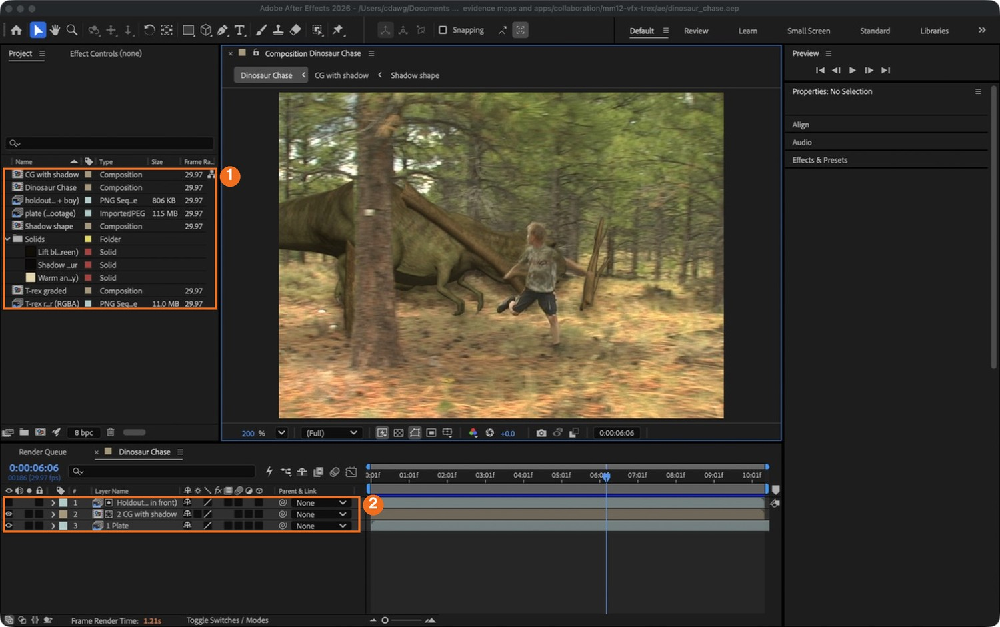
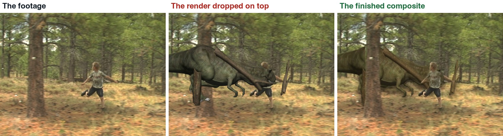
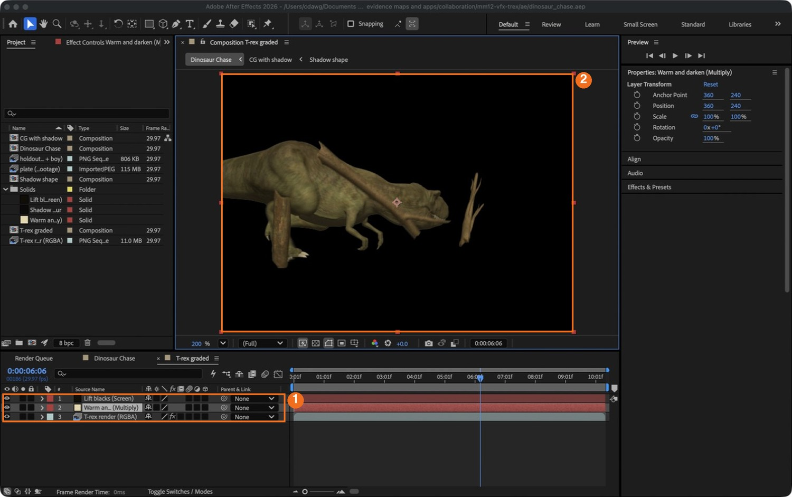
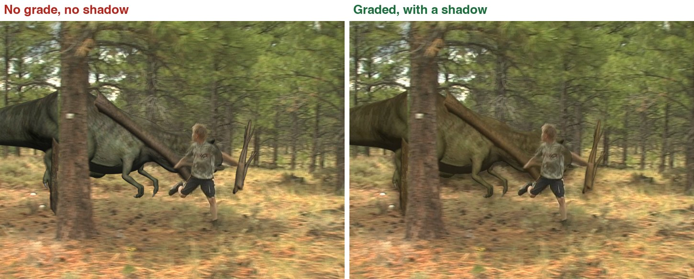
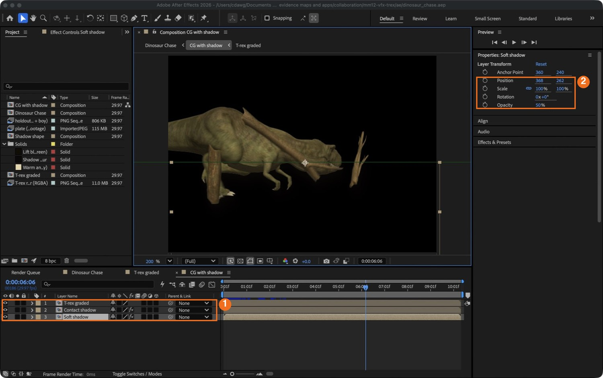
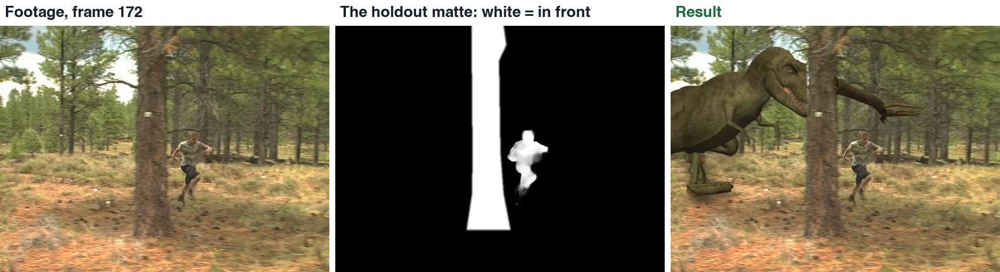
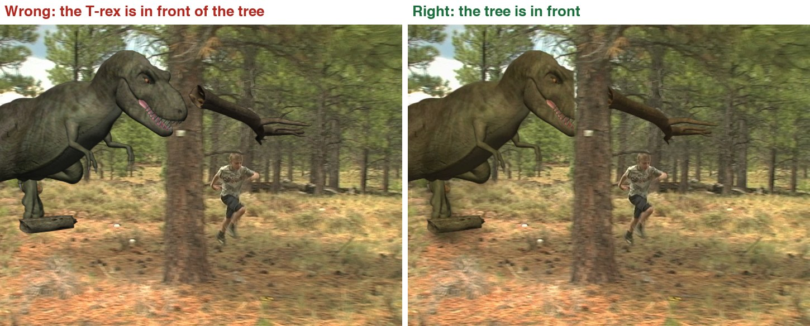
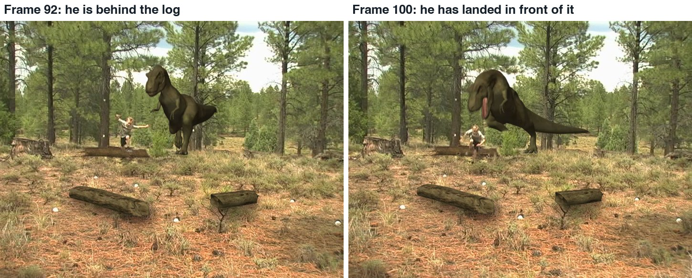
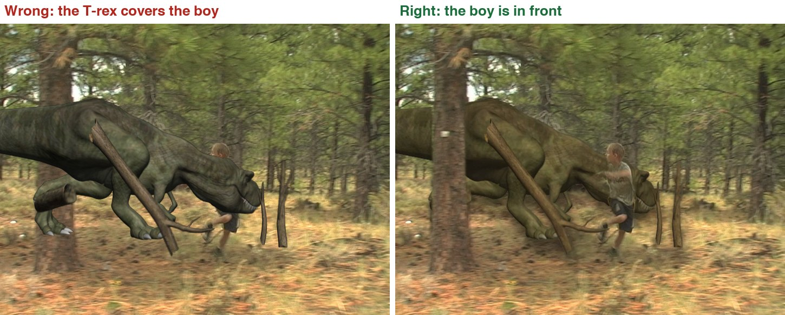

Take a finished CG creature and make it belong in live footage, in After Effects: stack, grade, shadow, then put the tree, the bushes and the boy back in front.
6 illustrated stagesTwo lessonsLayer order · grade · shadow · holdout mattes · rotoPractice plates: Hollywood Camera Work
The demo composite, built in After Effects. Footage and CG render: Hollywood Camera Work.
Stack. Match. Ground. Hold out.
No tracking and no 3D: the fastest way to learn what a compositor does.
My supports
Turn on any help you want. Your teacher may have set some for you. They change how the guide helps, not what is assessed.
Shot brief
Make the creature belong.
You are given the forest footage and a matching CG render with alpha. Deliver a composite where the creature shares the footage’s light and ground and passes behind everything that is closer to the camera, then a change of the director’s choosing.
You will hand in
A screenshot of your main timeline and your holdout
The finished shot as an MP4
The director’s change, with a three-sentence explanation
Credits for the footage
Footage and credits
The footage and the CG render are from Hollywood Camera Work. You may use them and post your results with credit, but do not re-upload the clips themselves.
On a film, the tracking and 3D departments hand the compositor separate layers. The compositor is the last artist to touch the shot and is responsible for whether the audience believes it. Most of that job is what you do here: matching, grounding and deciding what is in front of what.
Knowledge first
Why this works.
Match
Black level and colour first. Keep the contrast.
Ground
A shadow where the creature meets the ground does more than any colour change.
Depth
The CG is a flat layer. Everything real that is closer to the camera needs a holdout matte, and the order can change during the shot.
Check
Step through frame by frame. Errors hide at normal speed.
What this assesses
Skills you will show.
Skill (sprint skill ID)
Where you show it
Lighting and colour match · BL-LGT-01 · PS-LGT-02
Steps 2 and 3
Render · BL-RND-01
Step 6
Critique and refinement · GD-CRIT-01
Step 6
VFX craft (layering, mattes, roto, shadow)
Steps 1–5
Primary achievement evidence: the director’s change (step 6). Guided steps and supports are recorded separately from achievement. Shot-library option in sprint mm12-26-s08.
Session A · Lesson 1 · VFX shot library
Stack it, grade it, ground it.
You are given real footage and a finished CG creature. Dropped on top, it looks stuck on. Three things fix most of that: the right layer order, a colour match, and a shadow.
Start here: read or listen to the theory deck (about 10 minutes, with checkpoint questions), then come back.
Start here: read or listen to the theory deck (about 6 minutes, two checkpoint questions), then come back.
IN SHORTImport both as sequences; interpret as DV 0.91, 29.97; new comp from the plate; T-rex above.
READ ALOUD
DOCUMENT: After Effects · a new project SELECT: A composition with the footage and the T-rex on top TOOLS / ROUTE: File › Import › File · Interpret Footage · new composition
Watch the demo clip, then look at the three pictures: the footage, the render dropped on top, and the finished shot. List what gives the middle one away.
File › Import › File. Open the plate folder, click the first JPEG, tick the sequence box at the bottom of the dialog, and click Import. Do the same for the T-rex PNG sequence.
This is old DV video with non-square pixels. Right-click each item in the Project panel, choose Interpret Footage › Main, set Pixel Aspect Ratio to D1/DV NTSC (0.91) and the frame rate to 29.97.
Drag the plate onto the New Composition button at the bottom of the Project panel. A composition opens with the plate in it.
Drag the T-rex sequence into the timeline, above the plate. Its alpha channel makes everything except the creature see-through.
Press the space bar to play. Save the project as DinoChase_YourName.aep.
The finished demo shot. Footage and CG render: Hollywood Camera Work.
Click by click (real After Effects screenshots)

Real screenshot of the finished demo project. The Project panel (1) holds the two sequences and the compositions. The main timeline (2) has three layers: the plate at the bottom, the CG above it, and a matte on top.
STEP CHECKLIST
GLOSSARY
Plate: The live-action footage a visual effect is added to
Alpha channel: The part of an image that stores how see-through each pixel is

Real frames, frame 186. Left: the footage. Middle: the render simply placed on top. Right: the finished composite from this guide.
WHYA compositor’s first job is to look. If you cannot say what is wrong with the middle picture, you cannot fix it.
CHECKA composition that plays the footage with the T-rex on top, and a list of at least three things that look wrong.
FIXCreature looks stretched or slides against the footage? One of the two items has the wrong pixel aspect ratio or frame rate. Check Interpret Footage on both.
WORKED EXAMPLE · DIFFERENT OBJECTThe demo composition is 720 × 480, 29.97 frames per second, 310 frames.
STRETCH (AFTER THE CHECK PASSES)Scrub to frame 60. Who should be in front, the boy or the T-rex?
Method basis: H1 · A1. Values and sequence are authored for this project.
02
Grade the creature to sit in the footage
IN SHORTPre-compose the CG; Multiply solid to warm and darken; Screen solid to lift blacks; both with Preserve Transparency; compare in the main comp.
READ ALOUD
DOCUMENT: DinoChase_YourName.aep SELECT: A T-rex whose darks and colour match the forest TOOLS / ROUTE: Pre-compose · Layer › New › Solid · blending modes · Preserve Underlying Transparency
Select the T-rex layer and choose Layer › Pre-compose. Name it “T-rex graded” and move all attributes into the new composition. Double-click it to open it.
Layer › New › Solid. Pick a warm, slightly dark colour (the demo uses a pale tan). Put it above the T-rex and set its blending mode to Multiply. The creature gets warmer and a little darker.
The solid covers the whole frame. Click the small T switch on the solid (Preserve Underlying Transparency) so it only affects the creature.
Add a second solid: a very dark brown, mode Screen, with the same T switch. This lifts the creature’s blacks so they are no darker than the darkest part of the forest.
Go back to the main composition and compare. Adjust the two solid colours until the creature’s shadows and the tree trunks look like they belong to one photograph.
Do not blur the creature and do not wash it out. Keep its contrast.
Click by click (real After Effects screenshots)

Real screenshot: inside “T-rex graded”. Three layers (1): the render at the bottom, the Multiply solid, the Screen solid. The viewer (2) shows the creature only, because both solids keep its transparency.
What went wrong when we built the demo: our first grade lifted the blacks far too much and softened the creature. It turned into a flat grey shape, and Mr. Wadden rejected it. The render placed on the footage with no grade at all looked better. Small changes, and keep the contrast.
STEP CHECKLIST
GLOSSARY
Black level: How dark the darkest part of a picture is
Blending mode: The rule a layer uses to combine with the layers below it

Real frames, frame 186. Left: the render as supplied. Right: after the two solids and a shadow.
WHYCG usually arrives too clean: its blacks are pure black and its colour is neutral. Real footage has lifted blacks and a colour cast. Match those two things first.
CHECKA creature whose darkest parts match the darkest parts of the footage, and whose colour leans the same way.
FIXWhole frame changes colour? The T switch (Preserve Underlying Transparency) is off on that solid.
WORKED EXAMPLE · DIFFERENT OBJECTDemo values: Multiply solid R 0.90 G 0.84 B 0.67; Screen solid R 0.07 G 0.055 B 0.03.
STRETCH (AFTER THE CHECK PASSES)Try the same grade with one Curves effect instead of two solids.
Method basis: A2. Values and sequence are authored for this project.
03
Give it a shadow on the ground
IN SHORTShadow shape = dark solid with the CG as alpha matte; two copies, offset, blurred, low opacity; mask to the ground.
READ ALOUD
DOCUMENT: DinoChase_YourName.aep SELECT: A soft shadow and a tighter contact shadow under the creature TOOLS / ROUTE: Solid + Track Matte · Box Blur · Position · a feathered mask
Make a new composition called “Shadow shape”. Add a dark brown solid, then the T-rex sequence above it. Set the solid’s Track Matte to the T-rex layer (Alpha). You now have a dark cut-out the shape of the creature.
Make another composition, “CG with shadow”. Put “Shadow shape” in it twice, with “T-rex graded” on top.
Bottom copy, the soft shadow: move it down and a little sideways (Position), add Effect › Blur & Sharpen › Fast Box Blur with a radius of about 11, and set Opacity to about 50 %.
Middle copy, the contact shadow: move it down only a little, blur it by about 5, opacity about 40 %.
A shadow must not float in the air. On each shadow layer draw a rectangle mask over the ground only and feather its top edge.
In the main composition, replace the T-rex layer with “CG with shadow”.
Stated shortcut: this shadow is made from the creature’s outline. It is quick and it works on flat ground, but it is not a true rendered shadow.
STEP CHECKLIST
GLOSSARY
Track matte: Using one layer’s alpha or brightness to decide where another layer shows
Contact shadow: The small dark shadow right where an object touches a surface

Real screenshot: “CG with shadow”. Three layers (1): the graded T-rex, the contact shadow, the soft shadow. With the soft shadow selected, its Position and Opacity (2) show how far it was moved and how strong it is.
WHYNothing says “this thing is standing here” like a shadow where it meets the ground. Two shadows, one soft and one tight, read better than one.
CHECKThe ground darkens under and beside the creature, and the shadow moves with it.
FIXShadow shows on the trees and sky? The ground mask is missing or its feather is too wide.
WORKED EXAMPLE · DIFFERENT OBJECTDemo values: soft shadow moved 8 right and 22 down, blur 11, opacity 50 %; contact shadow 8 down, blur 5, opacity 38 %.
STRETCH (AFTER THE CHECK PASSES)Look at the real shadows in the footage. Which way do they fall? Move yours to match.
Method basis: A3. Values and sequence are authored for this project.
Session B · Lesson 2 · VFX shot library
What is in front of what.
The creature is one flat layer, but the forest is deep. A tree, two bushes and the boy are all closer to the camera than the T-rex. Each one needs a matte that puts it back in front.
TODAYThe tree (20 min), the boy and the log (25 min), director’s card and render (15 min).
04
Hold out the foreground tree
Recall first (from last lesson, no peeking):
What does an alpha channel store?
Which two things do you match first when grading CG into footage?
Why does a shadow matter so much?
Say or write your answers, then check them against your file.
IN SHORTDuplicate plate; mask the tree; Track Mask; use it as an inverted track matte on the CG; repeat for the bushes.
READ ALOUD
DOCUMENT: DinoChase_YourName.aep SELECT: A matte that puts the big tree in front of the creature TOOLS / ROUTE: Pen tool · mask · Track Mask · Track Matte (Luma Inverted)
Scrub to about frame 172. The big tree is close to the camera, but the T-rex is drawn over it.
Duplicate the plate layer and move the copy to the top. With the Pen tool, draw a mask around the tree trunk on that copy. Feather it by a pixel or two.
The camera pans, so the mask must follow. Right-click the mask and choose Track Mask, then track forwards and backwards from this frame. Fix any frames where it drifts.
Now use it. On the “CG with shadow” layer set Track Matte to the masked copy and choose the inverted option, so the creature is hidden wherever the tree is.
Play it. The T-rex should pass behind the trunk.
Do the same for the two bushes the T-rex runs behind at the start of the shot.

The footage, the demo’s holdout matte for that frame (white = in front of the CG), and the result.
No screenshot yet: this action is written from Adobe’s documentation. In the demo this matte was made by a script, not by hand in After Effects.
STEP CHECKLIST
GLOSSARY
Holdout matte: A matte of a real object that hides the CG behind it
Mask: A shape drawn on a layer that decides which part of it shows

Real frames, frame 172. Left: no holdout. Right: the tracked tree mask puts the trunk back in front.
WHYA holdout matte is a cut-out of something real that should cover the CG. Most believable composites have several.
CHECKThe creature passes behind the tree and behind the bushes.
FIXMask slides off the trunk? Track in shorter sections and correct it by hand every ten frames or so.
WORKED EXAMPLE · DIFFERENT OBJECTIn the demo the tree is in frame from frame 128 to frame 199 and moves about 590 pixels.
STRETCH (AFTER THE CHECK PASSES)Find one more thing in the footage that should be in front of the creature.
Method basis: A3 · A5. Values and sequence are authored for this project.
05
Roto the boy, and get the log right
IN SHORTRoto Brush the boy; freeze; add to the holdout; before the landing frame keep his matte off the log.
READ ALOUD
DOCUMENT: DinoChase_YourName.aep SELECT: The boy in front of the creature for the whole shot TOOLS / ROUTE: Roto Brush · Freeze · keyframed order
The boy is closer to the camera than the T-rex for the whole shot. Look at frame 190 without a matte: the creature covers him.
Duplicate the plate again, on top. Double-click it to open the Layer panel and choose the Roto Brush. Paint a stroke down the boy; After Effects finds his outline.
Step forward a frame at a time. Where the outline goes wrong, paint to add (or hold Option and paint to remove). When it is right, click Freeze.
Add this layer to your holdout: the creature must be hidden where the boy is, as well as where the tree and bushes are. The simplest way is to pre-compose all your masked copies into one “Holdout” composition and use that as the track matte.
Now the log. The CG includes a log the boy jumps. Until he lands he is behind it; after he lands he is in front. So before the landing frame his matte must not cut into the log.
Find the landing frame (97 in the demo). Before it, mask the log area out of his matte. After it, leave his matte whole.

Real frames. Before he lands the log covers his legs; after he lands he covers the log.
No screenshot yet: this action is written from Adobe’s documentation. In the demo this matte was made by a script, not by hand in After Effects.
What went wrong when we built the demo: we got this wrong three times. First there was no matte of the boy for the first two seconds, so the T-rex was drawn over him. Then he jumped through the log. Then the bushes were missed. Each time it was found by stepping through the shot frame by frame, which is how you should check yours.
STEP CHECKLIST
GLOSSARY
Rotoscoping: Cutting a moving subject out of footage frame by frame
Depth order: Which things are in front of which

Real frames, frame 190. Left: no roto. Right: the boy held out, so he is in front of the creature.
WHYDepth order can change during a shot. A compositor checks every moment where two things cross.
CHECKThe boy is never covered by the creature, and he jumps over the log, not through it.
FIXHis edge flickers? Shorten the Roto Brush span and correct more often. A slightly soft edge hides a lot.
WORKED EXAMPLE · DIFFERENT OBJECTIn the demo the boy lands on frame 97.
STRETCH (AFTER THE CHECK PASSES)Add a small shadow from the creature falling across the boy’s back as it closes in.
Method basis: A4 · A3. Values and sequence are authored for this project.
06
Practical check: the director’s change, then render and defend
IN SHORTCheck frame by frame; fix; read the card; change a copy; render H.264; defend; credit.
READ ALOUD
DOCUMENT: Your composite · the director’s card SELECT: Whatever the card requires TOOLS / ROUTE: Your own decisions · Composition › Add to Render Queue
Step through your whole shot, three frames at a time, and write down every frame where something is in front that should be behind.
Fix those first. Then read your director’s card (below).
Decide which part of the project the card touches: the grade, the shadow, a matte, or something new.
Make the change in a copy of your project. Composition › Add to Render Queue, set the output to H.264, and render.
Screen it and explain two compositing choices. Credit Hollywood Camera Work.
Card
The director says
1 · Dusk
“Make the whole shot dusk: cooler, darker, longer shadow.”
2 · Found footage
“It should feel like an old home video: grain, softness, a date stamp.”
3 · Heavier
“It doesn’t feel heavy. Give it a stronger shadow and a camera shake when it lands.”
4 · Fog
“Morning mist: the creature fades into haze when it is far away.”
Independent evidence: the main achievement evidence for this tutorial.
STEP CHECKLIST
GLOSSARY
Grade: The colour treatment of a shot
Render queue: The list of compositions After Effects will export
Four frames from the demo composite.
WHYBecause the creature, its shadow and each matte are separate layers, a compositor can change the mood of a shot without going back to 3D.
CHECKA changed shot that meets the card, rendered, with an explanation and credits.
FIXStuck? Name the part the card touches first. (Independent step: the Coach can explain tools but not decide your changes.)
WORKED EXAMPLE · DIFFERENT OBJECTWorked example on a different shot: a “make it foggy” card needed only a pale solid over the creature at low opacity, stronger when it is far away.
STRETCH (AFTER THE CHECK PASSES)Take two cards at once.
Method basis: A6. Values and sequence are authored for this project.
Before you submit
Student QA.
Evidence conversation
Keep it short and specific.
SENTENCE FRAMESThe CG gave itself away because ___. · I needed a holdout for ___ between frames ___ and ___. · For the director’s card I changed the ___ using ___.
Figures marked Illustration are drawn, not screenshots. Step values are starting points authored for this project. Draft for teacher review; not yet classroom-piloted.